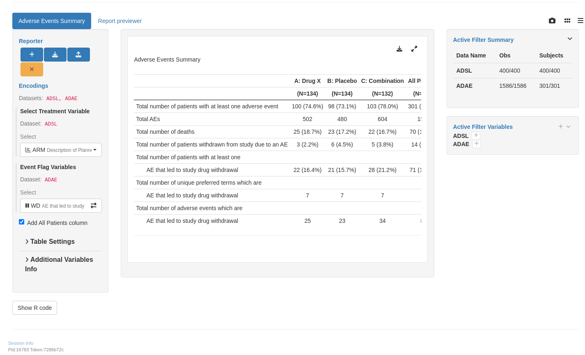

To illustrate, additional variables such as flags (TRUE/FALSE) for selected AEs of interest. Please consult your SAP on how to handle missing AE grades.
Code
library(tern)library(dplyr)adsl <- random.cdisc.data::cadsladae <- random.cdisc.data::cadaeadsl <-filter(adsl, SAFFL =="Y")adae <-filter(adae, ANL01FL =="Y"& SAFFL =="Y")adsl <-df_explicit_na(adsl)adae <-df_explicit_na(adae)not_resolved <- adae %>%filter(!(AEOUT %in%c("RECOVERED/RESOLVED", "FATAL", "RECOVERED/RESOLVED WITH SEQUELAE"))) %>%distinct(USUBJID) %>%mutate(NOT_RESOLVED ="Y")adae <- adae %>%left_join(not_resolved, by =c("USUBJID")) %>%mutate(ALL_RESOLVED =with_label(is.na(NOT_RESOLVED),"Total number of patients with all non-fatal AEs resolved" ),NOT_RESOLVED =with_label(!is.na(NOT_RESOLVED),"Total number of patients with at least one unresolved or ongoing non-fatal AE" ) )adae <- adae %>%mutate(AEDECOD =as.character(AEDECOD),WD =with_label( AEACN =="DRUG WITHDRAWN","Total number of patients with study drug withdrawn due to AE" ),DSM =with_label( AEACN %in%c("DRUG INTERRUPTED", "DOSE INCREASED", "DOSE REDUCED"),"Total number of patients with dose modified/interrupted due to AE" ),CONTRT =with_label( AECONTRT =="Y","Total number of patients with treatment received for AE" ),SER =with_label( AESER =="Y","Total number of patients with at least one serious AE" ),REL =with_label( AEREL =="Y","Total number of patients with at least one related AE" ),ALL_RESOLVED_WD =with_label( WD ==TRUE& ALL_RESOLVED ==TRUE,"No. of patients with study drug withdrawn due to resolved AE" ),ALL_RESOLVED_DSM =with_label( DSM ==TRUE& ALL_RESOLVED ==TRUE,"No. of patients with dose modified/interrupted due to resolved AE" ),ALL_RESOLVED_CONTRT =with_label( CONTRT ==TRUE& ALL_RESOLVED ==TRUE,"No. of patients with treatment received for resolved AE" ),NOT_RESOLVED_WD =with_label( WD ==TRUE& NOT_RESOLVED ==TRUE,"No. of patients with study drug withdrawn due to unresolved or ongoing AE" ),NOT_RESOLVED_DSM =with_label( DSM ==TRUE& NOT_RESOLVED ==TRUE,"No. of patients with dose modified/interrupted due to unresolved or ongoing AE" ),NOT_RESOLVED_CONTRT =with_label( CONTRT ==TRUE& NOT_RESOLVED ==TRUE,"No. of patients with treatment received for unresolved or ongoing AE" ),SERWD =with_label( AESER =="Y"& AEACN =="DRUG WITHDRAWN","No. of patients with study drug withdrawn due to serious AE" ),SERCONTRT =with_label( AECONTRT =="Y"& AESER =="Y","No. of patients with dose modified/interrupted due to serious AE" ),SERDSM =with_label( AESER =="Y"& AEACN %in%c("DRUG INTERRUPTED", "DOSE INCREASED", "DOSE REDUCED"),"No. of patients with treatment received for serious AE" ),RELWD =with_label( AEREL =="Y"& AEACN =="DRUG WITHDRAWN","No. of patients with study drug withdrawn due to related AE" ),RELDSM =with_label( AEREL =="Y"& AEACN %in%c("DRUG INTERRUPTED", "DOSE INCREASED", "DOSE REDUCED"),"No. of patients with dose modified/interrupted due to related AE" ),RELCONTRT =with_label( AECONTRT =="Y"& AEREL =="Y","No. of patients with treatment received for related AE" ),RELSER =with_label( AESER =="Y"& AEREL =="Y","No. of patients with serious, related AE" ) )adae <- adae %>%mutate(AETOXGR = forcats::fct_recode(AETOXGR,"Grade 1"="1","Grade 2"="2","Grade 3"="3","Grade 4"="4","Grade 5 (fatal outcome)"="5" ) )
aesi_vars <-c("WD", "DSM", "CONTRT", "ALL_RESOLVED", "NOT_RESOLVED", "SER", "REL")lyt_adae <-basic_table(show_colcounts =TRUE) %>%split_cols_by("ACTARM") %>%count_patients_with_event(vars ="USUBJID",filters =c("ANL01FL"="Y"),denom ="N_col",.labels =c(count_fraction ="Total number of patients with at least one AE") ) %>%count_values("ANL01FL",values ="Y",.stats ="count",.labels =c(count ="Total number of AEs"),table_names ="total_aes" ) %>%count_occurrences_by_grade(var ="AETOXGR",var_labels ="Total number of patients with at least one AE by worst grade",show_labels ="visible" ) %>%count_patients_with_flags("USUBJID", flag_variables = aesi_vars, denom ="N_col")result <-build_table(lyt_adae, df = adae, alt_counts_df = adsl)result
A: Drug X B: Placebo C: Combination
(N=134) (N=134) (N=132)
—————————————————————————————————————————————————————————————————————————————————————————————————————————————————————————
Total number of patients with at least one AE 100 (74.6%) 98 (73.1%) 103 (78.0%)
Total number of AEs 502 480 604
Total number of patients with at least one AE by worst grade
Grade 1 5 (3.7%) 7 (5.2%) 4 (3.0%)
Grade 2 5 (3.7%) 8 (6.0%) 6 (4.5%)
Grade 3 13 (9.7%) 13 (9.7%) 14 (10.6%)
Grade 4 13 (9.7%) 18 (13.4%) 15 (11.4%)
Grade 5 (fatal outcome) 64 (47.8%) 52 (38.8%) 64 (48.5%)
Total number of patients with study drug withdrawn due to AE 22 (16.4%) 21 (15.7%) 28 (21.2%)
Total number of patients with dose modified/interrupted due to AE 55 (41.0%) 62 (46.3%) 64 (48.5%)
Total number of patients with treatment received for AE 80 (59.7%) 80 (59.7%) 89 (67.4%)
Total number of patients with all non-fatal AEs resolved 17 (12.7%) 12 (9.0%) 11 (8.3%)
Total number of patients with at least one unresolved or ongoing non-fatal AE 83 (61.9%) 86 (64.2%) 92 (69.7%)
Total number of patients with at least one serious AE 85 (63.4%) 80 (59.7%) 87 (65.9%)
Total number of patients with at least one related AE 86 (64.2%) 85 (63.4%) 92 (69.7%)
Experimental use!
WebR is a tool allowing you to run R code in the web browser. Modify the code below and click run to see the results. Altenatively, copy the code and click here to open WebR in a new tab.
aesi_vars <-c("WD", "DSM", "CONTRT")aesi_resolved <-c("ALL_RESOLVED", "ALL_RESOLVED_WD", "ALL_RESOLVED_DSM", "ALL_RESOLVED_CONTRT")aesi_not_resolved <-c("NOT_RESOLVED", "NOT_RESOLVED_WD", "NOT_RESOLVED_DSM", "NOT_RESOLVED_CONTRT")aesi_ser <-c("SER", "SERWD", "SERDSM", "SERCONTRT")aesi_rel <-c("REL", "RELWD", "RELDSM", "RELCONTRT", "RELSER")lyt_adae <-basic_table(show_colcounts =TRUE) %>%split_cols_by("ACTARM") %>%count_patients_with_event(vars ="USUBJID",filters =c("ANL01FL"="Y"),denom ="N_col",.labels =c(count_fraction ="Total number of patients with at least one AE") ) %>%count_values("ANL01FL",values ="Y",.stats ="count",.labels =c(count ="Total number of AEs"),table_names ="total_aes" ) %>%count_occurrences_by_grade(var ="AETOXGR",var_labels ="Total number of patients with at least one AE by worst grade",show_labels ="visible" ) %>%count_patients_with_flags("USUBJID",flag_variables =c(aesi_vars, aesi_resolved[1]), denom ="N_col" ) %>%count_patients_with_flags("USUBJID",flag_variables = aesi_resolved[-1], denom ="N_col", .indent_mods =1L, table_names ="fl_res" ) %>%count_patients_with_flags("USUBJID",flag_variables = aesi_not_resolved[1], denom ="N_col", table_names ="fl_notres_main" ) %>%count_patients_with_flags("USUBJID",flag_variables = aesi_not_resolved[-1], denom ="N_col", .indent_mods =1L, table_names ="fl_notres" ) %>%count_patients_with_flags("USUBJID",flag_variables = aesi_ser[1], denom ="N_col", table_names ="fl_ser_main" ) %>%count_patients_with_flags("USUBJID",flag_variables = aesi_ser[-1], denom ="N_col", .indent_mods =1L, table_names ="fl_ser" ) %>%count_patients_with_flags("USUBJID",flag_variables = aesi_rel[1], denom ="N_col", table_names ="fl_rel_main" ) %>%count_patients_with_flags("USUBJID",flag_variables = aesi_rel[-1], denom ="N_col", .indent_mods =1L, table_names ="fl_rel" )result <-build_table(lyt_adae, df = adae, alt_counts_df = adsl)result
A: Drug X B: Placebo C: Combination
(N=134) (N=134) (N=132)
————————————————————————————————————————————————————————————————————————————————————————————————————————————————————————————
Total number of patients with at least one AE 100 (74.6%) 98 (73.1%) 103 (78.0%)
Total number of AEs 502 480 604
Total number of patients with at least one AE by worst grade
Grade 1 5 (3.7%) 7 (5.2%) 4 (3.0%)
Grade 2 5 (3.7%) 8 (6.0%) 6 (4.5%)
Grade 3 13 (9.7%) 13 (9.7%) 14 (10.6%)
Grade 4 13 (9.7%) 18 (13.4%) 15 (11.4%)
Grade 5 (fatal outcome) 64 (47.8%) 52 (38.8%) 64 (48.5%)
Total number of patients with study drug withdrawn due to AE 22 (16.4%) 21 (15.7%) 28 (21.2%)
Total number of patients with dose modified/interrupted due to AE 55 (41.0%) 62 (46.3%) 64 (48.5%)
Total number of patients with treatment received for AE 80 (59.7%) 80 (59.7%) 89 (67.4%)
Total number of patients with all non-fatal AEs resolved 17 (12.7%) 12 (9.0%) 11 (8.3%)
No. of patients with study drug withdrawn due to resolved AE 0 1 (0.7%) 2 (1.5%)
No. of patients with dose modified/interrupted due to resolved AE 3 (2.2%) 4 (3.0%) 2 (1.5%)
No. of patients with treatment received for resolved AE 9 (6.7%) 7 (5.2%) 7 (5.3%)
Total number of patients with at least one unresolved or ongoing non-fatal AE 83 (61.9%) 86 (64.2%) 92 (69.7%)
No. of patients with study drug withdrawn due to unresolved or ongoing AE 22 (16.4%) 20 (14.9%) 26 (19.7%)
No. of patients with dose modified/interrupted due to unresolved or ongoing AE 52 (38.8%) 58 (43.3%) 62 (47.0%)
No. of patients with treatment received for unresolved or ongoing AE 71 (53.0%) 73 (54.5%) 82 (62.1%)
Total number of patients with at least one serious AE 85 (63.4%) 80 (59.7%) 87 (65.9%)
No. of patients with study drug withdrawn due to serious AE 9 (6.7%) 4 (3.0%) 10 (7.6%)
No. of patients with treatment received for serious AE 21 (15.7%) 22 (16.4%) 28 (21.2%)
No. of patients with dose modified/interrupted due to serious AE 59 (44.0%) 58 (43.3%) 53 (40.2%)
Total number of patients with at least one related AE 86 (64.2%) 85 (63.4%) 92 (69.7%)
No. of patients with study drug withdrawn due to related AE 5 (3.7%) 10 (7.5%) 7 (5.3%)
No. of patients with dose modified/interrupted due to related AE 24 (17.9%) 32 (23.9%) 34 (25.8%)
No. of patients with treatment received for related AE 53 (39.6%) 58 (43.3%) 60 (45.5%)
No. of patients with serious, related AE 64 (47.8%) 52 (38.8%) 64 (48.5%)
Experimental use!
WebR is a tool allowing you to run R code in the web browser. Modify the code below and click run to see the results. Altenatively, copy the code and click here to open WebR in a new tab.
adsl <- random.cdisc.data::cadsladae_mult <- random.cdisc.data::cadaeadsl <-filter(adsl, SAFFL =="Y")adae_mult <-filter(adae_mult, ANL01FL =="Y"& SAFFL =="Y")adsl <-df_explicit_na(adsl)adae_mult <-df_explicit_na(adae_mult)# for illustration purposes only, create AEREL1, AEREL2, AEACN1, AEACN2 from respective variablesadae_mult <- adae_mult %>%mutate(AEREL1 = AEREL,AEREL2 = AEREL,AEACN1 = AEACN,AEACN2 = AEACN )not_resolved <- adae_mult %>%filter(!(AEOUT %in%c("RECOVERED/RESOLVED", "FATAL", "RECOVERED/RESOLVED WITH SEQUELAE"))) %>%distinct(USUBJID) %>%mutate(NOT_RESOLVED ="Y")adae_mult <- adae_mult %>%left_join(not_resolved, by =c("USUBJID")) %>%mutate(ALL_RESOLVED =with_label(is.na(NOT_RESOLVED),"Total number of patients with all non-fatal AEs resolved" ),NOT_RESOLVED =with_label(!is.na(NOT_RESOLVED),"Total number of patients with at least one non-fatal unresolved or ongoing AE" ) )adae_mult <- adae_mult %>%mutate(AEDECOD =as.character(AEDECOD),WD1 =with_label( AEACN1 =="DRUG WITHDRAWN","Total number of patients with study drug 1 withdrawn due to AE" ),WD2 =with_label( AEACN2 =="DRUG WITHDRAWN","Total number of patients with study drug 2 withdrawn due to AE" ),DSM1 =with_label( AEACN1 %in%c("DRUG INTERRUPTED", "DOSE INCREASED", "DOSE REDUCED"),"Total number of patients with dose of study drug 1 modified/interrupted due to AE" ),DSM2 =with_label( AEACN2 %in%c("DRUG INTERRUPTED", "DOSE INCREASED", "DOSE REDUCED"),"Total number of patients with dose of study drug 2 modified/interrupted due to AE" ),CONTRT =with_label( AECONTRT =="Y","Total number of patients with treatment received for AE" ),SER =with_label( AESER =="Y","Total number of patients with at least one serious AE" ),REL1 =with_label( AEREL1 =="Y","Total number of patients with at least one AE related to study drug 1" ),REL2 =with_label( AEREL2 =="Y","Total number of patients with at least one AE related to study drug 2" ),ALL_RESOLVED_WD1 =with_label( WD1 ==TRUE& ALL_RESOLVED ==TRUE,"No. of patients with study drug 1 withdrawn due to resolved AE" ),ALL_RESOLVED_DSM1 =with_label( DSM1 ==TRUE& ALL_RESOLVED ==TRUE,"No. of patients with dose of study drug 1 modified/interrupted due to resolved AE" ),ALL_RESOLVED_CONTRT =with_label( CONTRT ==TRUE& ALL_RESOLVED ==TRUE,"No. of patients with treatment received for resolved AE" ),ALL_RESOLVED_WD2 =with_label( WD2 ==TRUE& ALL_RESOLVED ==TRUE,"No. of patients with study drug 2 withdrawn due to resolved AE" ),ALL_RESOLVED_DSM2 =with_label( DSM2 ==TRUE& ALL_RESOLVED ==TRUE,"No. of patients with dose of study drug 2 modified/interrupted due to resolved AE" ),NOT_RESOLVED_WD1 =with_label( WD1 ==TRUE& NOT_RESOLVED ==TRUE,"No. of patients with study drug 1 withdrawn due to unresolved or ongoing AE" ),NOT_RESOLVED_DSM1 =with_label( DSM1 ==TRUE& NOT_RESOLVED ==TRUE,"No. of patients with dose of study drug 1 modified/interrupted due to unresolved or ongoing AE" ),NOT_RESOLVED_CONTRT =with_label( CONTRT ==TRUE& NOT_RESOLVED ==TRUE,"No. of patients with treatment received for unresolved or ongoing AE" ),NOT_RESOLVED_WD2 =with_label( WD2 ==TRUE& NOT_RESOLVED ==TRUE,"No. of patients with study drug 2 withdrawn due to unresolved or ongoing AE" ),NOT_RESOLVED_DSM2 =with_label( DSM2 ==TRUE& NOT_RESOLVED ==TRUE,"No. of patients with dose of study drug 2 modified/interrupted due to unresolved or ongoing AE" ),SERWD1 =with_label( AESER =="Y"& AEACN1 =="DRUG WITHDRAWN","No. of patients with study drug 1 withdrawn due to serious AE" ),SERWD2 =with_label( AESER =="Y"& AEACN2 =="DRUG WITHDRAWN","No. of patients with study drug 2 withdrawn due to serious AE" ),SERCONTRT =with_label( AECONTRT =="Y"& AESER =="Y","No. of patients with treatment received for serious AE" ),SERDSM1 =with_label( AESER =="Y"& AEACN1 %in%c("DRUG INTERRUPTED", "DOSE INCREASED", "DOSE REDUCED"),"No. of patients with dose of study drug 1 modified/interrupted due to serious AE" ),SERDSM2 =with_label( AESER =="Y"& AEACN2 %in%c("DRUG INTERRUPTED", "DOSE INCREASED", "DOSE REDUCED"),"No. of patients with dose of study drug 2 modified/interrupted due to serious AE" ),REL1WD1 =with_label( AEREL1 =="Y"& AEACN1 =="DRUG WITHDRAWN","No. of patients with study drug 1 withdrawn due to AE related to study drug 1" ),REL1WD2 =with_label( AEREL1 =="Y"& AEACN2 =="DRUG WITHDRAWN","No. of patients with study drug 1 withdrawn due to AE related to study drug 2" ),REL2WD1 =with_label( AEREL1 =="Y"& AEACN1 =="DRUG WITHDRAWN","No. of patients with study drug 2 withdrawn due to AE related to study drug 1" ),REL2WD2 =with_label( AEREL1 =="Y"& AEACN2 =="DRUG WITHDRAWN","No. of patients with study drug 2 withdrawn due to AE related to study drug 2" ),REL1DSM1 =with_label( AEREL1 =="Y"& AEACN1 %in%c("DRUG INTERRUPTED", "DOSE INCREASED", "DOSE REDUCED"),"No. of patients with dose of study drug 1 modified/interrupted due to AE related to study drug 1" ),REL2DSM1 =with_label( AEREL2 =="Y"& AEACN1 %in%c("DRUG INTERRUPTED", "DOSE INCREASED", "DOSE REDUCED"),"No. of patients with dose of study drug 2 modified/interrupted due to AE related to study drug 1" ),REL1DSM2 =with_label( AEREL1 =="Y"& AEACN2 %in%c("DRUG INTERRUPTED", "DOSE INCREASED", "DOSE REDUCED"),"No. of patients with dose of study drug 1 modified/interrupted due to AE related to study drug 2" ),REL2DSM2 =with_label( AEREL2 =="Y"& AEACN2 %in%c("DRUG INTERRUPTED", "DOSE INCREASED", "DOSE REDUCED"),"No. of patients with dose of study drug 2 modified/interrupted due to AE related to study drug 2" ),REL1CONTRT =with_label( AECONTRT =="Y"& AEREL1 =="Y","No. of patients with treatment received for AE related to study drug 1" ),REL2CONTRT =with_label( AECONTRT =="Y"& AEREL2 =="Y","No. of patients with treatment received for AE related to study drug 2" ),REL1SER =with_label( AESER =="Y"& AEREL1 =="Y","No. of patients with serious AE related to study drug 1" ),REL2SER =with_label( AESER =="Y"& AEREL2 =="Y","No. of patients with serious AE related to study drug 2" ) )adae_mult <- adae_mult %>%mutate(AETOXGR = forcats::fct_recode( AETOXGR,"Grade 1"="1","Grade 2"="2","Grade 3"="3","Grade 4"="4","Grade 5 (fatal outcome)"="5" ))aesi_vars <-c("WD1", "WD2", "DSM1", "DSM2", "CONTRT")aesi_res <-c("ALL_RESOLVED","ALL_RESOLVED_WD1","ALL_RESOLVED_WD2","ALL_RESOLVED_DSM1","ALL_RESOLVED_DSM2","ALL_RESOLVED_CONTRT")aesi_not_res <-c("NOT_RESOLVED","NOT_RESOLVED_WD1","NOT_RESOLVED_WD2","NOT_RESOLVED_DSM1","NOT_RESOLVED_DSM2","NOT_RESOLVED_CONTRT")aesi_ser <-c("SER", "SERWD1", "SERWD2", "SERDSM1", "SERDSM2", "SERCONTRT")aesi_rel1 <-c("REL1", "REL1WD1", "REL1WD2", "REL1DSM1", "REL1DSM2", "REL1CONTRT", "REL1SER")aesi_rel2 <-c("REL2", "REL2WD1", "REL2WD2", "REL2DSM1", "REL2DSM2", "REL2CONTRT", "REL2SER")lyt_adae_mult <-basic_table(show_colcounts =TRUE) %>%split_cols_by("ACTARM") %>%count_patients_with_event(vars ="USUBJID",filters =c("ANL01FL"="Y"),denom ="N_col",.labels =c(count_fraction ="Total number of patients with at least one AE") ) %>%count_values("ANL01FL",values ="Y",.stats ="count",.labels =c(count ="Total number of AEs"),table_names ="total_aes" ) %>%count_occurrences_by_grade(var ="AETOXGR",var_labels ="Total number of patients with at least one AE by worst grade",show_labels ="visible" ) %>%count_patients_with_flags("USUBJID",flag_variables =c(aesi_vars, aesi_res[1]), denom ="N_col" ) %>%count_patients_with_flags("USUBJID",flag_variables = aesi_res[-1], denom ="N_col", .indent_mods =1L, table_names ="fl_res" ) %>%count_patients_with_flags("USUBJID",flag_variables = aesi_not_res[1], denom ="N_col", table_names ="fl_notres_main" ) %>%count_patients_with_flags("USUBJID",flag_variables = aesi_not_res[-1], denom ="N_col", .indent_mods =1L, table_names ="fl_notres" ) %>%count_patients_with_flags("USUBJID",flag_variables = aesi_ser[1], denom ="N_col", table_names ="fl_ser_main" ) %>%count_patients_with_flags("USUBJID",flag_variables = aesi_ser[-1], denom ="N_col", .indent_mods =1L, table_names ="fl_ser" ) %>%count_patients_with_flags("USUBJID",flag_variables = aesi_rel1[1], denom ="N_col", table_names ="fl_rel1_main" ) %>%count_patients_with_flags("USUBJID",flag_variables = aesi_rel1[-1], denom ="N_col", .indent_mods =1L, table_names ="fl_rel1" ) %>%count_patients_with_flags("USUBJID",flag_variables = aesi_rel2[1], denom ="N_col", table_names ="fl_rel2_main" ) %>%count_patients_with_flags("USUBJID",flag_variables = aesi_rel2[-1], denom ="N_col", .indent_mods =1L, table_names ="fl_rel2" )result <-build_table(lyt_adae_mult, df = adae_mult, alt_counts_df = adsl)result
A: Drug X B: Placebo C: Combination
(N=134) (N=134) (N=132)
——————————————————————————————————————————————————————————————————————————————————————————————————————————————————————————————————————————————
Total number of patients with at least one AE 100 (74.6%) 98 (73.1%) 103 (78.0%)
Total number of AEs 502 480 604
Total number of patients with at least one AE by worst grade
Grade 1 5 (3.7%) 7 (5.2%) 4 (3.0%)
Grade 2 5 (3.7%) 8 (6.0%) 6 (4.5%)
Grade 3 13 (9.7%) 13 (9.7%) 14 (10.6%)
Grade 4 13 (9.7%) 18 (13.4%) 15 (11.4%)
Grade 5 (fatal outcome) 64 (47.8%) 52 (38.8%) 64 (48.5%)
Total number of patients with study drug 1 withdrawn due to AE 22 (16.4%) 21 (15.7%) 28 (21.2%)
Total number of patients with study drug 2 withdrawn due to AE 22 (16.4%) 21 (15.7%) 28 (21.2%)
Total number of patients with dose of study drug 1 modified/interrupted due to AE 55 (41.0%) 62 (46.3%) 64 (48.5%)
Total number of patients with dose of study drug 2 modified/interrupted due to AE 55 (41.0%) 62 (46.3%) 64 (48.5%)
Total number of patients with treatment received for AE 80 (59.7%) 80 (59.7%) 89 (67.4%)
Total number of patients with all non-fatal AEs resolved 17 (12.7%) 12 (9.0%) 11 (8.3%)
No. of patients with study drug 1 withdrawn due to resolved AE 0 1 (0.7%) 2 (1.5%)
No. of patients with study drug 2 withdrawn due to resolved AE 0 1 (0.7%) 2 (1.5%)
No. of patients with dose of study drug 1 modified/interrupted due to resolved AE 3 (2.2%) 4 (3.0%) 2 (1.5%)
No. of patients with dose of study drug 2 modified/interrupted due to resolved AE 3 (2.2%) 4 (3.0%) 2 (1.5%)
No. of patients with treatment received for resolved AE 9 (6.7%) 7 (5.2%) 7 (5.3%)
Total number of patients with at least one non-fatal unresolved or ongoing AE 83 (61.9%) 86 (64.2%) 92 (69.7%)
No. of patients with study drug 1 withdrawn due to unresolved or ongoing AE 22 (16.4%) 20 (14.9%) 26 (19.7%)
No. of patients with study drug 2 withdrawn due to unresolved or ongoing AE 22 (16.4%) 20 (14.9%) 26 (19.7%)
No. of patients with dose of study drug 1 modified/interrupted due to unresolved or ongoing AE 52 (38.8%) 58 (43.3%) 62 (47.0%)
No. of patients with dose of study drug 2 modified/interrupted due to unresolved or ongoing AE 52 (38.8%) 58 (43.3%) 62 (47.0%)
No. of patients with treatment received for unresolved or ongoing AE 71 (53.0%) 73 (54.5%) 82 (62.1%)
Total number of patients with at least one serious AE 85 (63.4%) 80 (59.7%) 87 (65.9%)
No. of patients with study drug 1 withdrawn due to serious AE 9 (6.7%) 4 (3.0%) 10 (7.6%)
No. of patients with study drug 2 withdrawn due to serious AE 9 (6.7%) 4 (3.0%) 10 (7.6%)
No. of patients with dose of study drug 1 modified/interrupted due to serious AE 21 (15.7%) 22 (16.4%) 28 (21.2%)
No. of patients with dose of study drug 2 modified/interrupted due to serious AE 21 (15.7%) 22 (16.4%) 28 (21.2%)
No. of patients with treatment received for serious AE 59 (44.0%) 58 (43.3%) 53 (40.2%)
Total number of patients with at least one AE related to study drug 1 86 (64.2%) 85 (63.4%) 92 (69.7%)
No. of patients with study drug 1 withdrawn due to AE related to study drug 1 5 (3.7%) 10 (7.5%) 7 (5.3%)
No. of patients with study drug 1 withdrawn due to AE related to study drug 2 5 (3.7%) 10 (7.5%) 7 (5.3%)
No. of patients with dose of study drug 1 modified/interrupted due to AE related to study drug 1 24 (17.9%) 32 (23.9%) 34 (25.8%)
No. of patients with dose of study drug 1 modified/interrupted due to AE related to study drug 2 24 (17.9%) 32 (23.9%) 34 (25.8%)
No. of patients with treatment received for AE related to study drug 1 53 (39.6%) 58 (43.3%) 60 (45.5%)
No. of patients with serious AE related to study drug 1 64 (47.8%) 52 (38.8%) 64 (48.5%)
Total number of patients with at least one AE related to study drug 2 86 (64.2%) 85 (63.4%) 92 (69.7%)
No. of patients with study drug 2 withdrawn due to AE related to study drug 1 5 (3.7%) 10 (7.5%) 7 (5.3%)
No. of patients with study drug 2 withdrawn due to AE related to study drug 2 5 (3.7%) 10 (7.5%) 7 (5.3%)
No. of patients with dose of study drug 2 modified/interrupted due to AE related to study drug 1 24 (17.9%) 32 (23.9%) 34 (25.8%)
No. of patients with dose of study drug 2 modified/interrupted due to AE related to study drug 2 24 (17.9%) 32 (23.9%) 34 (25.8%)
No. of patients with treatment received for AE related to study drug 2 53 (39.6%) 58 (43.3%) 60 (45.5%)
No. of patients with serious AE related to study drug 2 64 (47.8%) 52 (38.8%) 64 (48.5%)
Experimental use!
WebR is a tool allowing you to run R code in the web browser. Modify the code below and click run to see the results. Altenatively, copy the code and click here to open WebR in a new tab.
adsl <- random.cdisc.data::cadsladae <- random.cdisc.data::cadaeadsl <-filter(adsl, SAFFL =="Y")adae <-filter(adae, ANL01FL =="Y"& SAFFL =="Y")adsl <-df_explicit_na(adsl)adae <-df_explicit_na(adae)stack_adae_by_smq <-function(adae, smq) { adae_labels <-c(var_labels(adae), "Standardized MedDRA Query") l_df <-lapply(smq, function(ae_grp) { ae_scope <-gsub("NAM", "SC", ae_grp) keep <- adae[[ae_grp]] !="<Missing>" df <- adae[keep, ]if (substr(ae_grp, 1, 3) =="SMQ") { df[["SMQ"]] <-aesi_label(as.character(df[[ae_grp]]), scope =as.character(df[[ae_scope]])) } else { df[["SMQ"]] <- df[[ae_grp]] } df }) result <-do.call(rbind, l_df)var_labels(result) <- adae_labels result}adae_smq <-stack_adae_by_smq(adae, c("SMQ01NAM", "SMQ02NAM", "CQ01NAM"))not_resolved <- adae_smq %>%filter(!(AEOUT %in%c("RECOVERED/RESOLVED", "FATAL", "RECOVERED/RESOLVED WITH SEQUELAE"))) %>%distinct(USUBJID) %>%mutate(NOT_RESOLVED ="Y")adae_smq <- adae_smq %>%left_join(not_resolved, by =c("USUBJID")) %>%mutate(ALL_RESOLVED =with_label(is.na(NOT_RESOLVED),"Total number of patients with all non-fatal AEs resolved" ),NOT_RESOLVED =with_label(!is.na(NOT_RESOLVED),"Total number of patients with at least one non-fatal unresolved or ongoing AE" ) )adae_smq <- adae_smq %>%mutate(AEDECOD =as.character(AEDECOD),WD =with_label( AEACN =="DRUG WITHDRAWN","Total number of patients with study drug withdrawn due to AE" ),DSM =with_label( AEACN %in%c("DRUG INTERRUPTED", "DOSE INCREASED", "DOSE REDUCED"),"Total number of patients with dose modified/interrupted due to AE" ),CONTRT =with_label( AECONTRT =="Y","Total number of patients with treatment received for AE" ),SER =with_label( AESER =="Y","Total number of patients with at least one serious AE" ),REL =with_label( AEREL =="Y","Total number of patients with at least one related AE" ),ALL_RESOLVED_WD =with_label( WD ==TRUE& ALL_RESOLVED ==TRUE,"No. of patients with study drug withdrawn due to resolved AE" ),ALL_RESOLVED_DSM =with_label( DSM ==TRUE& ALL_RESOLVED ==TRUE,"No. of patients with dose modified/interrupted due to resolved AE" ),ALL_RESOLVED_CONTRT =with_label( CONTRT ==TRUE& ALL_RESOLVED ==TRUE,"No. of patients with treatment received for resolved AE" ),NOT_RESOLVED_WD =with_label( WD ==TRUE& NOT_RESOLVED ==TRUE,"No. of patients with study drug withdrawn due to unresolved or ongoing AE" ),NOT_RESOLVED_DSM =with_label( DSM ==TRUE& NOT_RESOLVED ==TRUE,"No. of patients with dose modified/interrupted due to unresolved or ongoing AE" ),NOT_RESOLVED_CONTRT =with_label( CONTRT ==TRUE& NOT_RESOLVED ==TRUE,"No. of patients with treatment received for unresolved or ongoing AE" ),SERWD =with_label( AESER =="Y"& AEACN =="DRUG WITHDRAWN","No. of patients with study drug withdrawn due to serious AE" ),SERCONTRT =with_label( AECONTRT =="Y"& AESER =="Y","No. of patients with treatment received for serious AE" ),SERDSM =with_label( AESER =="Y"& AEACN %in%c("DRUG INTERRUPTED", "DOSE INCREASED", "DOSE REDUCED"),"No. of patients with dose modified/interrupted due to serious AE" ),RELWD =with_label( AEREL =="Y"& AEACN =="DRUG WITHDRAWN","No. of patients with study drug withdrawn due to related AE" ),RELDSM =with_label( AEREL =="Y"& AEACN %in%c("DRUG INTERRUPTED", "DOSE INCREASED", "DOSE REDUCED"),"No. of patients with dose modified/interrupted due to related AE" ),RELCONTRT =with_label( AECONTRT =="Y"& AEREL =="Y","No. of patients with treatment received for related AE" ),RELSER =with_label( AESER =="Y"& AEREL =="Y","No. of patients with serious, related AE" ) )adae_smq <- adae_smq %>%mutate(AETOXGR = forcats::fct_recode(AETOXGR,"Grade 1"="1","Grade 2"="2","Grade 3"="3","Grade 4"="4","Grade 5 (fatal outcome)"="5" ) )split_fun <-remove_split_levels("<Missing>")aesi_vars <-c("WD", "DSM", "CONTRT", "ALL_RESOLVED", "NOT_RESOLVED", "SER", "REL")lyt_adae <-basic_table(show_colcounts =TRUE) %>%split_cols_by("ACTARM") %>%split_rows_by("SMQ",child_labels ="visible",split_fun = split_fun,split_label ="Standardized MedDRA Query",label_pos ="topleft" ) %>%count_patients_with_event(vars ="USUBJID",filters =c("ANL01FL"="Y"),denom ="N_col",.labels =c(count_fraction ="Total number of patients with at least one AE") ) %>%count_values("ANL01FL",values ="Y",.stats ="count",.labels =c(count ="Total number of AEs"),table_names ="total_aes" ) %>%count_occurrences_by_grade(var ="AETOXGR",var_labels ="Total number of patients with at least one AE by worst grade",.show_labels ="visible" ) %>%count_patients_with_flags("USUBJID", flag_variables = aesi_vars, denom ="N_col")result <-build_table(lyt_adae, df = adae_smq, alt_counts_df = adsl)result
A: Drug X B: Placebo C: Combination
Standardized MedDRA Query (N=134) (N=134) (N=132)
——————————————————————————————————————————————————————————————————————————————————————————————————————————————————————————
C.1.1.1.3/B.2.2.3.1 AESI (BROAD)
Total number of patients with at least one AE 58 (43.3%) 60 (44.8%) 66 (50.0%)
Total number of AEs 97 106 122
Total number of patients with at least one AE by worst grade
Grade 1 22 (16.4%) 26 (19.4%) 30 (22.7%)
Grade 2 0 0 0
Grade 3 0 0 0
Grade 4 36 (26.9%) 34 (25.4%) 36 (27.3%)
Grade 5 (fatal outcome) 0 0 0
Total number of patients with study drug withdrawn due to AE 5 (3.7%) 6 (4.5%) 9 (6.8%)
Total number of patients with dose modified/interrupted due to AE 21 (15.7%) 21 (15.7%) 24 (18.2%)
Total number of patients with treatment received for AE 32 (23.9%) 35 (26.1%) 44 (33.3%)
Total number of patients with all non-fatal AEs resolved 7 (5.2%) 9 (6.7%) 8 (6.1%)
Total number of patients with at least one non-fatal unresolved or ongoing AE 51 (38.1%) 51 (38.1%) 58 (43.9%)
Total number of patients with at least one serious AE 38 (28.4%) 40 (29.9%) 45 (34.1%)
Total number of patients with at least one related AE 36 (26.9%) 34 (25.4%) 36 (27.3%)
D.2.1.5.3/A.1.1.1.1 AESI
Total number of patients with at least one AE 62 (46.3%) 61 (45.5%) 76 (57.6%)
Total number of AEs 106 100 139
Total number of patients with at least one AE by worst grade
Grade 1 62 (46.3%) 61 (45.5%) 76 (57.6%)
Grade 2 0 0 0
Grade 3 0 0 0
Grade 4 0 0 0
Grade 5 (fatal outcome) 0 0 0
Total number of patients with study drug withdrawn due to AE 6 (4.5%) 8 (6.0%) 4 (3.0%)
Total number of patients with dose modified/interrupted due to AE 23 (17.2%) 20 (14.9%) 26 (19.7%)
Total number of patients with treatment received for AE 33 (24.6%) 37 (27.6%) 33 (25.0%)
Total number of patients with all non-fatal AEs resolved 4 (3.0%) 5 (3.7%) 14 (10.6%)
Total number of patients with at least one non-fatal unresolved or ongoing AE 58 (43.3%) 56 (41.8%) 62 (47.0%)
Total number of patients with at least one serious AE 0 0 0
Total number of patients with at least one related AE 37 (27.6%) 46 (34.3%) 50 (37.9%)
Experimental use!
WebR is a tool allowing you to run R code in the web browser. Modify the code below and click run to see the results. Altenatively, copy the code and click here to open WebR in a new tab.
library(teal.modules.clinical)## Data reproducible codedata <-teal_data()data <-within(data, {library(dplyr) ADSL <- random.cdisc.data::cadsl ADAE <- random.cdisc.data::cadae ADAE <-filter(ADAE, ANL01FL =="Y"& SAFFL =="Y") not_resolved <- ADAE %>%filter(!(AEOUT %in%c("RECOVERED/RESOLVED", "FATAL", "RECOVERED/RESOLVED WITH SEQUELAE"))) %>%distinct(USUBJID) %>%mutate(NOT_RESOLVED ="Y") ADAE <- ADAE %>%left_join(not_resolved, by =c("USUBJID")) %>%mutate(ALL_RESOLVED =with_label(is.na(NOT_RESOLVED), "All non-fatal AEs resolved"),NOT_RESOLVED =with_label(!is.na(NOT_RESOLVED), "At least one non-fatal unresolved or ongoing AE") ) ADAE <- ADAE %>%mutate(AEDECOD =as.character(AEDECOD),WD =with_label(AEACN =="DRUG WITHDRAWN", "AE that led to study drug withdrawal"),DSM =with_label( AEACN %in%c("DRUG INTERRUPTED", "DOSE INCREASED", "DOSE REDUCED"),"AE that led to study drug dose modified/interrupted" ),CONTRT =with_label(AECONTRT =="Y", "AE that required treatment"),SER =with_label(AESER =="Y", "Serious AE"),REL =with_label(AEREL =="Y", "Related AE"),ALL_RESOLVED_WD =with_label( WD ==TRUE& ALL_RESOLVED ==TRUE,"Resolved AE that led to study drug withdrawal" ),ALL_RESOLVED_DSM =with_label( DSM ==TRUE& ALL_RESOLVED ==TRUE,"Resolved AE that led to study drug dose modified/interrupted" ),ALL_RESOLVED_CONTRT =with_label( CONTRT ==TRUE& ALL_RESOLVED ==TRUE,"Resolved AE that required treatment" ),NOT_RESOLVED_WD =with_label( WD ==TRUE& NOT_RESOLVED ==TRUE,"Unresolved AE that led to study drug withdrawal" ),NOT_RESOLVED_DSM =with_label( DSM ==TRUE& NOT_RESOLVED ==TRUE,"Unresolved AE that led to study drug dose modified/interrupted" ),NOT_RESOLVED_CONTRT =with_label( CONTRT ==TRUE& NOT_RESOLVED ==TRUE,"Unresolved AE that required treatment" ),SERWD =with_label( AESER =="Y"& AEACN =="DRUG WITHDRAWN","Serious AE that led to study drug withdrawal" ),SERCONTRT =with_label( AECONTRT =="Y"& AESER =="Y","Serious AE that required treatment" ),SERDSM =with_label( AESER =="Y"& AEACN %in%c("DRUG INTERRUPTED", "DOSE INCREASED", "DOSE REDUCED"),"Serious AE that led to study drug dose modified/interrupted" ),RELWD =with_label( AEREL =="Y"& AEACN =="DRUG WITHDRAWN", "Related AE that led to study drug withdrawal" ),RELDSM =with_label( AEREL =="Y"& AEACN %in%c("DRUG INTERRUPTED", "DOSE INCREASED", "DOSE REDUCED"),"Related AE that led to study drug dose modified/interrupted" ),RELCONTRT =with_label(AECONTRT =="Y"& AEREL =="Y", "Related AE that required treatment"),RELSER =with_label(AESER =="Y"& AEREL =="Y", "Serious related AE") )})datanames <-c("ADSL", "ADAE")datanames(data) <- datanamesjoin_keys(data) <- default_cdisc_join_keys[datanames]aesi_vars <-c("WD", "DSM", "CONTRT", "ALL_RESOLVED_WD", "ALL_RESOLVED_DSM", "ALL_RESOLVED_CONTRT","NOT_RESOLVED_WD", "NOT_RESOLVED_DSM", "NOT_RESOLVED_CONTRT", "SER", "SERWD", "SERDSM","SERCONTRT", "REL", "RELWD", "RELDSM", "RELCONTRT", "RELSER")## Setup Appapp <-init(data = data,modules =modules(tm_t_events_summary(label ="Adverse Events Summary",dataname ="ADAE",arm_var =choices_selected(choices =variable_choices("ADSL", c("ARM", "ARMCD")),selected ="ARM" ),flag_var_anl =choices_selected(choices =variable_choices("ADAE", aesi_vars),selected = aesi_vars[1],keep_order =TRUE,fixed =FALSE ),add_total =TRUE ) ))shinyApp(app$ui, app$server)

Experimental use!
shinylive allow you to modify to run shiny application entirely in the web browser. Modify the code below and click re-run the app to see the results. The performance is slighly worse and some of the features (e.g. downloading) might not work at all.
#| standalone: true#| viewerHeight: 800#| editorHeight: 200#| components: [viewer, editor]#| layout: vertical# -- WEBR HELPERS --options(webr_pkg_repos = c("r-universe" = "https://pharmaverse.r-universe.dev", getOption("webr_pkg_repos")))# -- APP CODE --library(teal.modules.clinical)## Data reproducible codedata <- teal_data()data <- within(data, { library(dplyr) ADSL <- random.cdisc.data::cadsl ADAE <- random.cdisc.data::cadae ADAE <- filter(ADAE, ANL01FL == "Y" & SAFFL == "Y") not_resolved <- ADAE %>% filter(!(AEOUT %in% c("RECOVERED/RESOLVED", "FATAL", "RECOVERED/RESOLVED WITH SEQUELAE"))) %>% distinct(USUBJID) %>% mutate(NOT_RESOLVED = "Y") ADAE <- ADAE %>% left_join(not_resolved, by = c("USUBJID")) %>% mutate( ALL_RESOLVED = with_label(is.na(NOT_RESOLVED), "All non-fatal AEs resolved"), NOT_RESOLVED = with_label(!is.na(NOT_RESOLVED), "At least one non-fatal unresolved or ongoing AE") ) ADAE <- ADAE %>% mutate( AEDECOD = as.character(AEDECOD), WD = with_label(AEACN == "DRUG WITHDRAWN", "AE that led to study drug withdrawal"), DSM = with_label( AEACN %in% c("DRUG INTERRUPTED", "DOSE INCREASED", "DOSE REDUCED"), "AE that led to study drug dose modified/interrupted" ), CONTRT = with_label(AECONTRT == "Y", "AE that required treatment"), SER = with_label(AESER == "Y", "Serious AE"), REL = with_label(AEREL == "Y", "Related AE"), ALL_RESOLVED_WD = with_label( WD == TRUE & ALL_RESOLVED == TRUE, "Resolved AE that led to study drug withdrawal" ), ALL_RESOLVED_DSM = with_label( DSM == TRUE & ALL_RESOLVED == TRUE, "Resolved AE that led to study drug dose modified/interrupted" ), ALL_RESOLVED_CONTRT = with_label( CONTRT == TRUE & ALL_RESOLVED == TRUE, "Resolved AE that required treatment" ), NOT_RESOLVED_WD = with_label( WD == TRUE & NOT_RESOLVED == TRUE, "Unresolved AE that led to study drug withdrawal" ), NOT_RESOLVED_DSM = with_label( DSM == TRUE & NOT_RESOLVED == TRUE, "Unresolved AE that led to study drug dose modified/interrupted" ), NOT_RESOLVED_CONTRT = with_label( CONTRT == TRUE & NOT_RESOLVED == TRUE, "Unresolved AE that required treatment" ), SERWD = with_label( AESER == "Y" & AEACN == "DRUG WITHDRAWN", "Serious AE that led to study drug withdrawal" ), SERCONTRT = with_label( AECONTRT == "Y" & AESER == "Y", "Serious AE that required treatment" ), SERDSM = with_label( AESER == "Y" & AEACN %in% c("DRUG INTERRUPTED", "DOSE INCREASED", "DOSE REDUCED"), "Serious AE that led to study drug dose modified/interrupted" ), RELWD = with_label( AEREL == "Y" & AEACN == "DRUG WITHDRAWN", "Related AE that led to study drug withdrawal" ), RELDSM = with_label( AEREL == "Y" & AEACN %in% c("DRUG INTERRUPTED", "DOSE INCREASED", "DOSE REDUCED"), "Related AE that led to study drug dose modified/interrupted" ), RELCONTRT = with_label(AECONTRT == "Y" & AEREL == "Y", "Related AE that required treatment"), RELSER = with_label(AESER == "Y" & AEREL == "Y", "Serious related AE") )})datanames <- c("ADSL", "ADAE")datanames(data) <- datanamesjoin_keys(data) <- default_cdisc_join_keys[datanames]aesi_vars <- c( "WD", "DSM", "CONTRT", "ALL_RESOLVED_WD", "ALL_RESOLVED_DSM", "ALL_RESOLVED_CONTRT", "NOT_RESOLVED_WD", "NOT_RESOLVED_DSM", "NOT_RESOLVED_CONTRT", "SER", "SERWD", "SERDSM", "SERCONTRT", "REL", "RELWD", "RELDSM", "RELCONTRT", "RELSER")## Setup Appapp <- init( data = data, modules = modules( tm_t_events_summary( label = "Adverse Events Summary", dataname = "ADAE", arm_var = choices_selected( choices = variable_choices("ADSL", c("ARM", "ARMCD")), selected = "ARM" ), flag_var_anl = choices_selected( choices = variable_choices("ADAE", aesi_vars), selected = aesi_vars[1], keep_order = TRUE, fixed = FALSE ), add_total = TRUE ) ))shinyApp(app$ui, app$server)
The following package(s) have unsatisfied dependencies:
- tern requires emmeans (>= 1.10.4), but version 1.10.3 is installed
- tern.mmrm requires emmeans (>= 1.10.4), but version 1.10.3 is installed
Consider updating the required dependencies as appropriate.